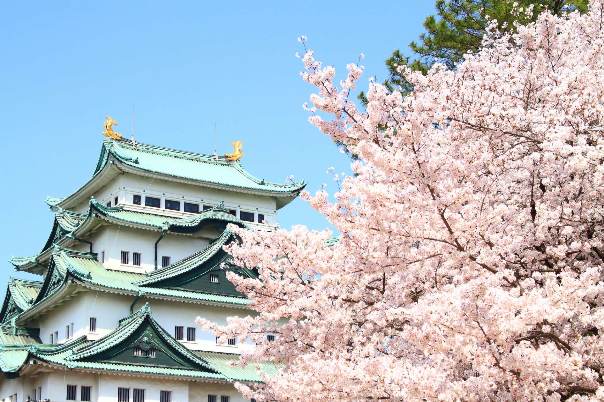
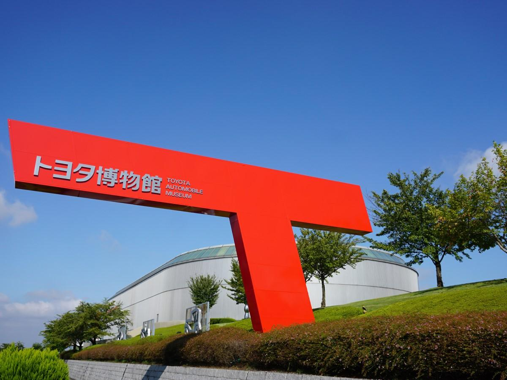
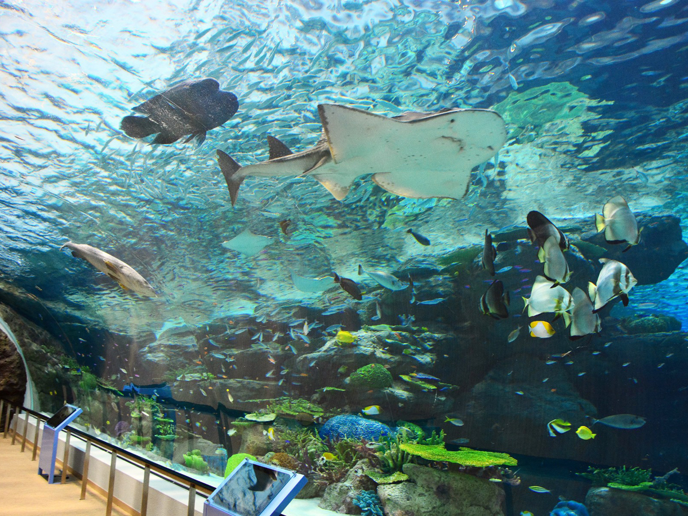
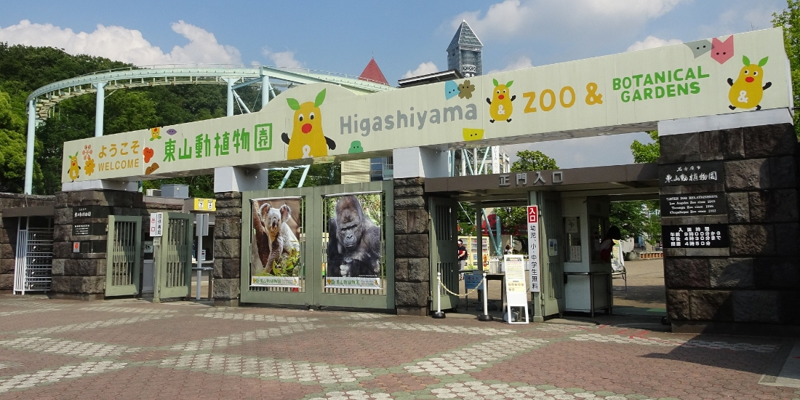
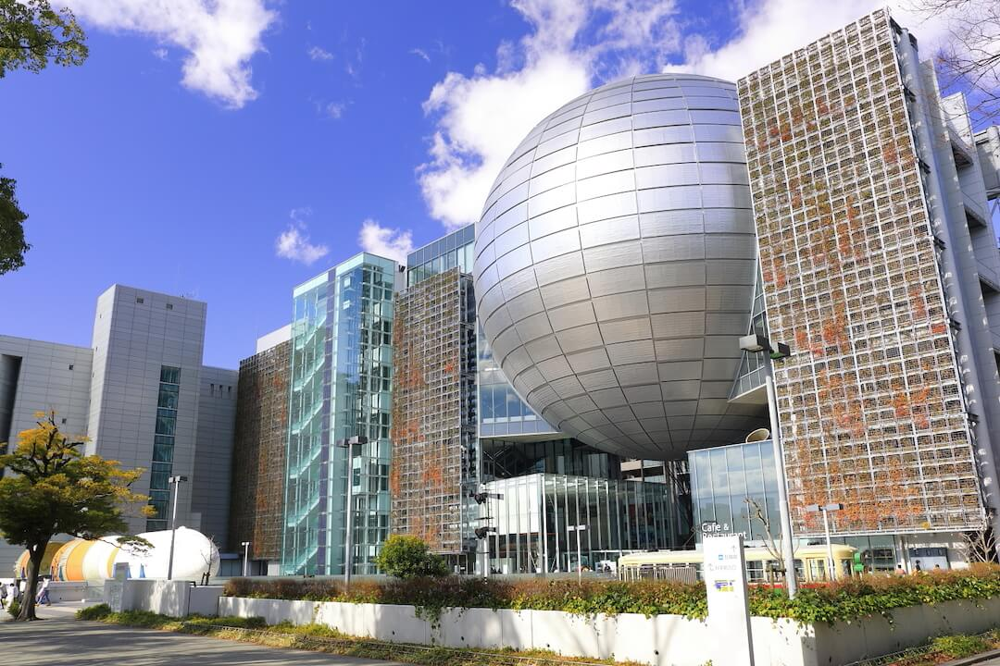
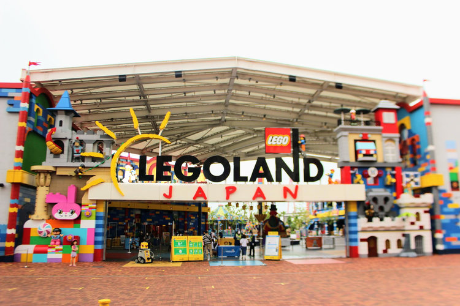

名古屋市は日本の中部地方に位置し、愛知県の県庁所在地です。日本の主要な工業都市であり、自動車メーカーのトヨタの本社が近隣にあることでも知られています。市内には多くの商業施設や大学があり、経済や教育の中心地となっています。また、伝統的な文化と現代的な都市生活が調和しており、名古屋独自の魅力を持っています。
名古屋市へようこそ！
愛知県の中心
名古屋市について
歴史
名古屋市の歴史は1610年に徳川家康が名古屋城を築いたことに始まります。江戸時代には商業の中心地として栄え、織物業や陶磁器産業が発展しました。明治以降は工業化が進み、特に自動車産業が発展しました。第二次世界大戦後には、急速な復興と経済成長を遂げ、現在では日本を代表する工業都市の一つとして知られています。


観光地
名古屋には多くの観光地があり、訪れる人々を魅了します。名古屋城はその代表的な存在で、美しい庭園と歴史的な建築が楽しめます。熱田神宮は日本有数の神社で、毎年多くの参拝者が訪れます。また、東山動植物園や名古屋港水族館など、自然や動物に触れられる施設も充実しています。さらに、名古屋市科学館やレゴランドジャパンなどの家族向けの施設も人気です。
- 名古屋港水族館 -
- 東山動物園 -
- 名古屋市科学館 -
- レゴランドジャパン -




アクセス
名古屋市は交通の要所としても非常に便利です。新幹線を利用すれば東京や大阪から短時間でアクセスできます。また、中部国際空港（セントレア）からは国内外の多くの都市へ直行便があり、国際的な交通の拠点となっています。市内交通も発達しており、地下鉄やバスを使って簡単に移動できます。観光やビジネスで訪れる人々にとって非常に利便性の高い都市です。